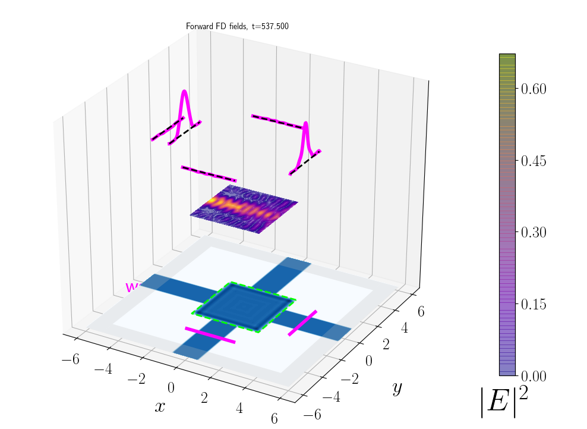
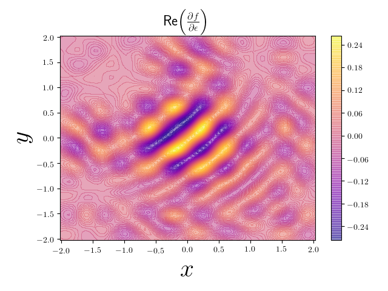
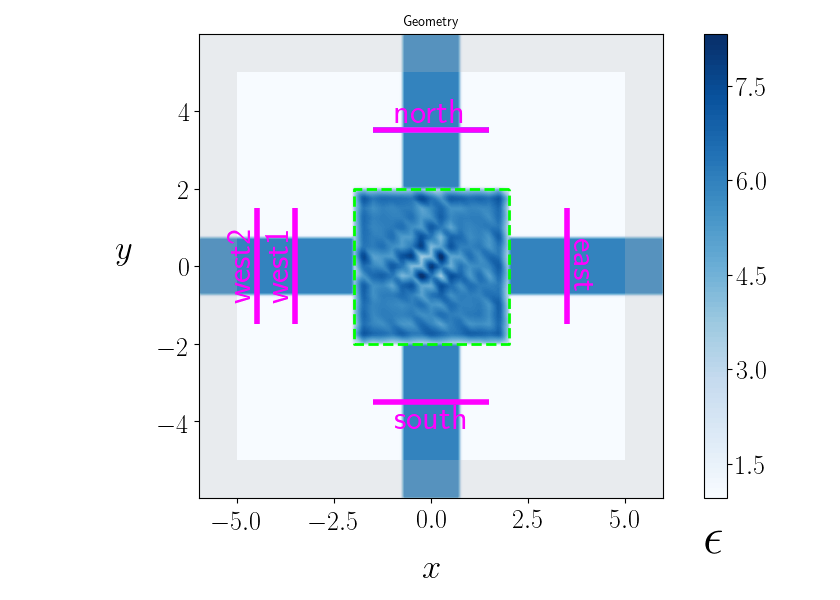
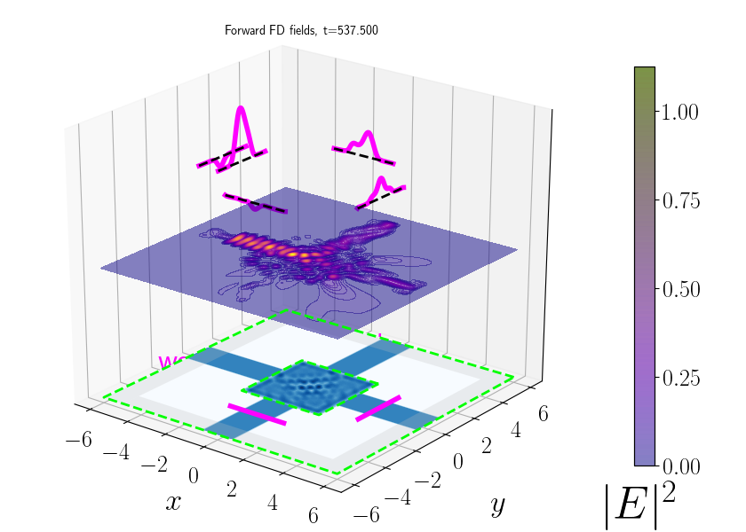
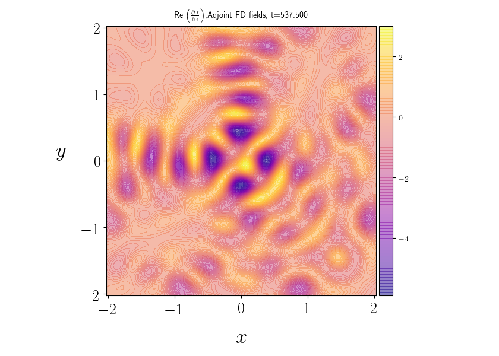
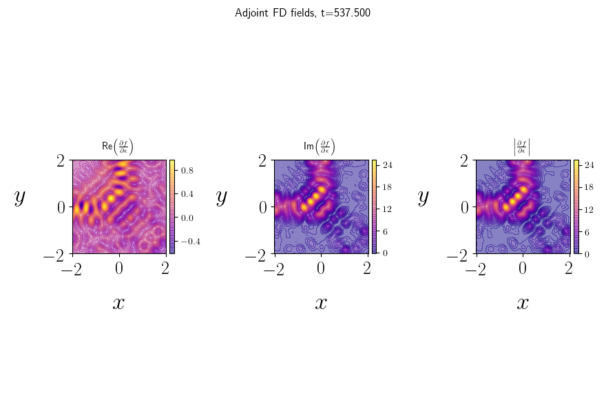

Design optimization with the meep adjoint solver: Gallery of worked examples¶
table of contents
Full automated optimization of a cross-router device
An full example of a successful automated design automation in which
mp.adjointautomatically redesigns a photonic component to improve its performance by several orders of magnitude with no human guidance whatsoever.Numerical validation of adjoint gradients
A warm-up validation in which we test the accuracy of objective-function derivatives computed by
mp.adjointagainst known results and finite-difference derivatives for a simple toy model.
Full automated optimization of a cross-router device¶
In this example, meep.adjoint automatically designs the
central section of a four-way router
to achieve near-perfect routing of power from the west input
port to the north output port.
cd ${MEEP_INSTALLATION}/python/examples/adjoint_optimization
python CrossRouter.py --verbose --visualize --optimize
| Geometry | Forward fields | Adjoint derivative \partial f /\partial\epsilon |
|---|---|---|
 |
 |  |
| Geometry | Forward fields | Adjoint derivative \partial f /\partial\epsilon |
|---|---|---|
|  |  |  |
| Geometry | Forward fields | Adjoint derivative \partial f /\partial\epsilon |
|---|---|---|
 |
 |
 |
---¶
Numerical validation of adjoint gradients¶
As discussed in the Reference Manual,
the OptimizationProblem base class offers command-line options
for estimating objective-function derivatives with respect
to individual design variables---that is, individual components
of the objective-function gradient vector---by numerical finite-differencing.
This provides a useful check on the accuracy of the
gradient computed via the adjoint method. In this example
we'll apply this technique to the simple
holey waveguide geometry discussed
in the [Overview][Overview], involving a circular hole
in an otherwise perfect section of a slab waveguide of
permittivity \epsilon\sups{wvg}.
For this problem, the design region is the area of the hole,
and we will consider a particularly simple basis consisting of
the single basis function \{b_0(\vb x)\equiv 1\}, so that
our sole design variable \beta_0 is just the constant permittivity$
\epsilon\sups{hole} of the hole region; the design problem is
to tweak \epsilon\sups{hole}
to maximize output power flux (flux through the port labeled 'east')
for fixed input flux from by the eigenmode source2.
The advantage of this as a validating sanity-check for adjoint calculations is the simple dependence of the objective on the design variable: clearly, transmission through the waveguides can't be better than perfect, which is what it is when $\epsilon\sups{hole}\equiv \epsilon\sups{wvg} and there \textit{is} no hole, so the function f(\epsilon\sup{hole}) must be peaked at \epsilon\sup{wvg} and its derivative vanishes there. This gives one test on the correctness of an adjoint implementation, and we get others by looking at the derivative at other points on the curve, with reference values be estimated via finite-differencing.
Thus, for a set of 24 \epsilon^\subs{hole} values ranging from 1 to 2\epsilon^\sup{wvg} we will compute the objective function and its adjoint-based and finite-difference derivatives with respect to \epsilon\sups{hole}.
Running the calculation serially from a shell script¶
The individual calculations may be performed by executing the
[HoleyWaveguide.py][HoleyWaveyguide.py] script from the
shell with command-line options, i.e.
#!/bin/bash
python HoleyWaveguide.py ${COMMON} --beta 0 1.0 --filebase B1P0
python HoleyWaveguide.py ${COMMON} --beta 0 1.5 --filebase B1P5
python HoleyWaveguide.py ${COMMON} --beta 0 2.0 --filebase B120
...
python HoleyWaveguide.py ${COMMON} --beta 0 12.0 --filebase BW12P0
Note that the only options that vary from case to case
are --beta 0 xx, setting distinct values for the design
variable \beta_0\equiv \epsilon\sups{hole},
and --filebase, giving different names to output
files so they don't overwrite one another.
The options in common to all cases are:
### Running the calculation serially from Python
The effect of running the shell command
`% python HoleyWaveguide.py OPTIONS`
can be reproduced from a python script or console
by creating an instance of `HoleyWaveguide`
and calling its `run()` method.
In this case, the command-line options OPTIONS
should be passed (as a single string separated by spaces)
to the optional `cmdline` parameter of the `HoleyWaveguide`
constructor, while `run()` takes no arguments:
```py3
import numpy as np
# generate command lines
bs = np.linspace(1.0,12.0,23)
args = " --eval_gradient --fd_order 2 --fd_index 0 "
cmdlines = [ args + '--beta 0 {} --filebase b{}'.format(b,b) for b in bs ]
# run calculations
for cmdline in cmdlines:
HW=HoleyWaveguide(cmdline=cmdline)
HW.run()
Running the calculation¶
Here's how the
Running the calculation in parallel using ParallelDesignTester¶
Although these calculations aren't particularly time-consuming,
in a multiprocessor environment
we can make them go really fast by using the ParallelDesignTester
utility distributed with meep.adjoint. As described in the
[Reference Manual][ParallelDesignTester], this is a simple
tool provided by meep.adjoint parallel batch processing of jobs
like the one considered here, which has the advantage of
presenting as a completely transparent drop-in replacement
for your existing serial loop:
theentiretyof the rejiggering required to parallelize
your batch is to replace thefor cmdline in cmdlines` loop
above with the single line
ParallelDesignTester('HoleyWaveguide',cmdlines).launch()
This will launch a pool of N server processes to whittle
its way in parallel through your batch; for each string
in the cmdlines list, one or another server will
instantiate a HoleyWaveguide (or any other class you
specify) with those command lines, then call its run()
method.
Results¶
Whether executed serially or in parallel, each of the 23 jobs
produces text-based output files named e.g. b13.out, b13.digest,
and b13.legend, where b13 is the job-dependent
label assigned the filebase option. The out
file uses a compressed format in which all data
(objective-function values, adjoint gradient values,
and finite-difference derivatives) for a specific design
point (in this case, that means a specific value of
\beta_0\equiv \epsilon\sups{hole}) appear on a single
line of the file with labels to indicate the design point;
this is indended for plotting vs. \beta_0 or other
post-processing. The digest file reports the same
data in a more human-readable format. The legend
file contains information helping to interpret the content
of the other files.
!!! note "Working directories in ParallelDesignTester runs
ParallelDesignTester creates and changes to a new
timestamped working directory for each pool of parallel
batch jobs; look for your output files in
subdirectory called something like HoleyWaveguide_0323.022256,
For the case at hand, we want to (a) concatenate all of the
.out files into an omnibus data file, (b) sort by the
design-variable values reported on specific columns, then
© plot various data quantities (e.g. objective-function
value, adjoint gradient components, and finite-difference derivatives,
each of which appear in their own specific columns)
versus design variable.
![HoleyWaveguideAdjointVsFDResults][HoleyWaveguide_AdjointVsFD.png]
We see that \epsilon\sup{hole} derivatives computed by adjoints agree well with numerical finite-difference data.